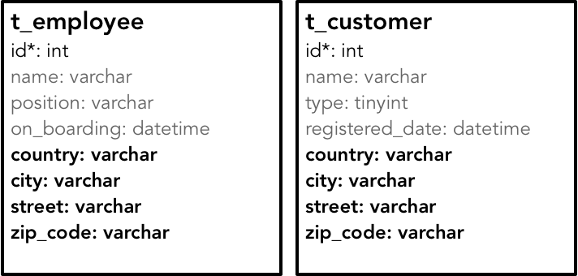
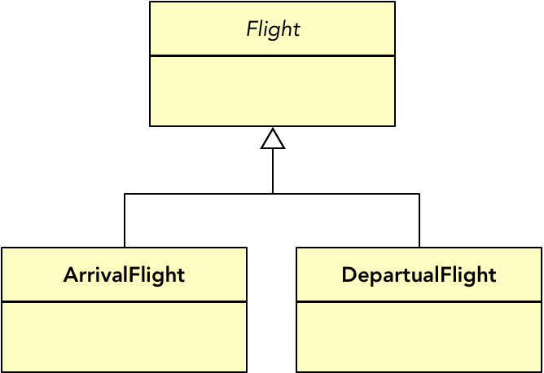
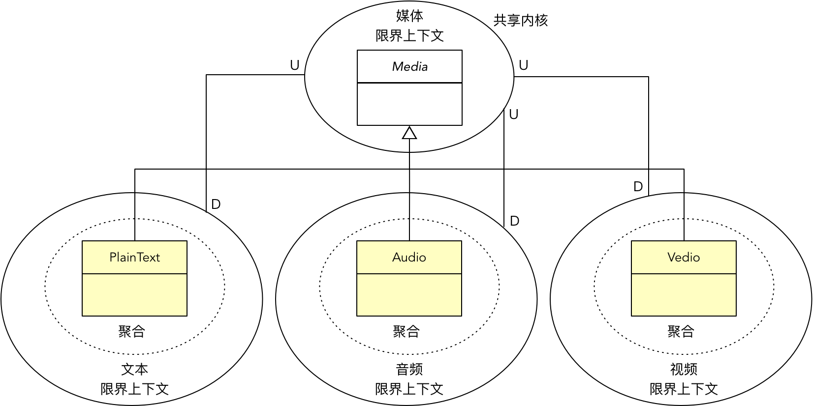
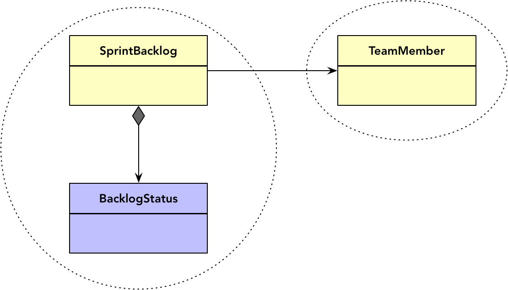
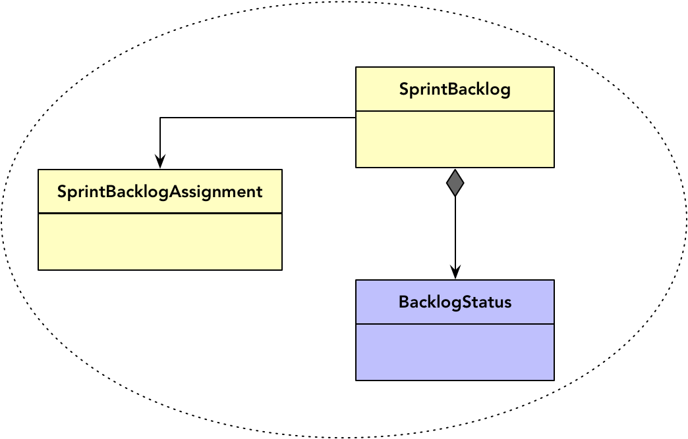

- 001 「战略篇」访谈 DDD 和微服务是什么关系？.md.html
- 002 「战略篇」开篇词：领域驱动设计，重焕青春的设计经典.md.html
- 003 领域驱动设计概览.md.html
- 004 深入分析软件的复杂度.md.html
- 005 控制软件复杂度的原则.md.html
- 006 领域驱动设计对软件复杂度的应对（上）.md.html
- 007 领域驱动设计对软件复杂度的应对（下）.md.html
- 008 软件开发团队的沟通与协作.md.html
- 009 运用领域场景分析提炼领域知识（上）.md.html
- 010 运用领域场景分析提炼领域知识（下）.md.html
- 011 建立统一语言.md.html
- 012 理解限界上下文.md.html
- 013 限界上下文的控制力（上）.md.html
- 014 限界上下文的控制力（下）.md.html
- 015 识别限界上下文（上）.md.html
- 016 识别限界上下文（下）.md.html
- 017 理解上下文映射.md.html
- 018 上下文映射的团队协作模式.md.html
- 019 上下文映射的通信集成模式.md.html
- 020 辨别限界上下文的协作关系（上）.md.html
- 021 辨别限界上下文的协作关系（下）.md.html
- 022 认识分层架构.md.html
- 023 分层架构的演化.md.html
- 024 领域驱动架构的演进.md.html
- 025 案例 层次的职责与协作关系（图文篇）.md.html
- 026 限界上下文与架构.md.html
- 027 限界上下文对架构的影响.md.html
- 028 领域驱动设计的代码模型.md.html
- 029 代码模型的架构决策.md.html
- 030 实践 先启阶段的需求分析.md.html
- 031 实践 先启阶段的领域场景分析（上）.md.html
- 032 实践 先启阶段的领域场景分析（下）.md.html
- 033 实践 识别限界上下文.md.html
- 034 实践 确定限界上下文的协作关系.md.html
- 035 实践 EAS 的整体架构.md.html
- 036 「战术篇」访谈：DDD 能帮开发团队提高设计水平吗？.md.html
- 037 「战术篇」开篇词：领域驱动设计的不确定性.md.html
- 038 什么是模型.md.html
- 039 数据分析模型.md.html
- 040 数据设计模型.md.html
- 041 数据模型与对象模型.md.html
- 042 数据实现模型.md.html
- 043 案例 培训管理系统.md.html
- 044 服务资源模型.md.html
- 045 服务行为模型.md.html
- 046 服务设计模型.md.html
- 047 领域模型驱动设计.md.html
- 048 领域实现模型.md.html
- 049 理解领域模型.md.html
- 050 领域模型与结构范式.md.html
- 051 领域模型与对象范式（上）.md.html
- 052 领域模型与对象范式（中）.md.html
- 053 领域模型与对象范式（下）.md.html
- 054 领域模型与函数范式.md.html
- 055 领域驱动分层架构与对象模型.md.html
- 056 统一语言与领域分析模型.md.html
- 057 精炼领域分析模型.md.html
- 058 彩色 UML 与彩色建模.md.html
- 059 四色建模法.md.html
- 060 案例 订单核心流程的四色建模.md.html
- 061 事件风暴与业务全景探索.md.html
- 062 事件风暴与领域分析建模.md.html
- 063 案例 订单核心流程的事件风暴.md.html
- 064 表达领域设计模型.md.html
- 065 实体.md.html
- 066 值对象.md.html
- 067 对象图与聚合.md.html
- 068 聚合设计原则.md.html
- 069 聚合之间的关系.md.html
- 070 聚合的设计过程.md.html
- 071 案例 培训领域模型的聚合设计.md.html
- 072 领域模型对象的生命周期-工厂.md.html
- 073 领域模型对象的生命周期-资源库.md.html
- 074 领域服务.md.html
- 075 案例 领域设计模型的价值.md.html
- 076 应用服务.md.html
- 077 场景的设计驱动力.md.html
- 078 案例 薪资管理系统的场景驱动设计.md.html
- 079 场景驱动设计与 DCI 模式.md.html
- 080 领域事件.md.html
- 081 发布者—订阅者模式.md.html
- 082 事件溯源模式.md.html
- 083 测试优先的领域实现建模.md.html
- 084 深入理解简单设计.md.html
- 085 案例 薪资管理系统的测试驱动开发（上）.md.html
- 086 案例 薪资管理系统的测试驱动开发（下）.md.html
- 087 对象关系映射（上）.md.html
- 088 对象关系映射（下）.md.html
- 089 领域模型与数据模型.md.html
- 090 领域驱动设计对持久化的影响.md.html
- 091 领域驱动设计体系.md.html
- 092 子领域与限界上下文.md.html
- 093 限界上下文的边界与协作.md.html
- 094 限界上下文之间的分布式通信.md.html
- 095 命令查询职责分离.md.html
- 096 分布式柔性事务.md.html
- 097 设计概念的统一语言.md.html
- 098 模型对象.md.html
- 099 领域驱动设计参考过程模型.md.html
- 100 领域驱动设计的精髓.md.html
- 101 实践 员工上下文的领域建模.md.html
- 102 实践 考勤上下文的领域建模.md.html
- 103 实践 项目上下文的领域建模.md.html
- 104 实践 培训上下文的业务需求.md.html
- 105 实践 培训上下文的领域分析建模.md.html
- 106 实践 培训上下文的领域设计建模.md.html
- 107 实践 培训上下文的领域实现建模.md.html
- 108 实践 EAS 系统的代码模型.md.html
- 109 后记：如何学习领域驱动设计.md.html
070 聚合的设计过程
魏国的丁厨师给魏惠王介绍他如何解牛：解牛时，需得顺着牛体天然的结构，击入大的缝隙，顺着骨节间的空处进刀。由于牛体的骨节有空隙，而屠刀的刀口却薄得像没有厚度，于是我以无厚入有间，没有厚度似的刀口在有空隙的骨节中，真可以说是游刃有余。每当遇到筋骨交错聚结的地方，我看到它难以处理，就会怵然为戒，目光更专注，动作更缓慢，用刀更轻柔，结果它霍地一声剖开了，像泥土一样散落在地上。
丁厨师的解牛技巧可以总结为：
- 杀牛前，需要理清牛体的结构
- 刀薄且快
- 找到骨节的空隙至为关键
- 若遇筋骨交错聚结之处，需谨慎用刀
经过领域分析模型转换而来的对象图就是一头牛，聚合是刀，且是一把没有厚度的刀。设计者该当像丁厨师那般解对象图：
- 需弄清楚对象图的结构
- 聚合为边界，乃无厚度之刀
- 寻找关系最薄弱处下刀，以无厚入有间
- 若依赖纠缠不清，当谨慎使用聚合
这实际上就是高质量设计聚合的基本过程：
- 第一步：弄清楚对象图的结构。可以以细化后的领域分析模型作为领域设计模型对象图，理清它们之间的关系，辨别类为实体还是值对象，并保证类关系的单一导航方向。
- 第二步：以关系强弱为界，以聚合边界为刀，逐一分解。仅仅将具有继承关系与合成关系的类放入聚合边界内，其余类则一刀解开，各自为独立的聚合。
- 第三步：怵然为戒，谨慎设计聚合。针对聚合边界模糊的地方，运用聚合设计原则做进一步推导。
这个过程可戏称此为聚合设计的庖丁解牛过程，可进一步精简为：
- 理顺对象图
- 分解关系薄弱处
- 调整聚合边界
理顺对象图
对象图来自领域分析模型，理顺对象图，就是要明确类之间的关系，即确定为继承关系、组合关系或协作关系，当然也可以无关系。其中组合关系需要进一步确认为合成关系，还是 OO 聚合关系。设计时，现实模型到对象图的映射代表了不同的观察视角：前者考虑的概念之间的关系，后者考虑的是编程语言中类的关系，实则就是指向对象的指针。
关系带来的是依赖，因而需要控制。Eric Evans 给出了 3 种方法：
- 规定一个遍历方向
- 添加一个限定符，以便有效地减少多重关系
- 消除不必要的关系
这 3 种方法都是为了让类之间的关联关系变得更加健康，尤其应避免双向的导航方向。我们必须一再强调从单一导航方向的视角对关系建模。之所以会出现双向导航，是因为类之间存在双向关联。双向关联一定存在主次。若存在双向关联的类属于同一个聚合，由于聚合类的实体之间可以采用对象引用的形式，就应保留“主类型”导航向“从类型”的方向。例如，聚合内的 Order 与 OrderItem 之间的关系，既可以描述为订单拥有多个订单项，也可以描述为订单项属于某个订单。订单为主，订单项为从，故而应该只保留从 Order 到 OrderItem 的单一导航方向。若存在双向关联的类分属两个不同的聚合，且为各自的聚合根实体，为了降低彼此的依赖强度，往往是保留“从类型”导航向“主类型”的方向。例如，Customer 与 Order 是两个聚合的根实体，客户为主，订单为从，则应该保留从 Order 聚合根到 Customer 聚合根的单一导航方向。
实体还是值对象
除了要有效控制类之间的关系外，还需要分辨领域分析模型中的领域类究竟是实体还是值对象。在前面介绍值对象时，我写道：
在进行领域驱动设计时，我们应该优先考虑使用值对象来建模而不是实体对象。因为值对象没有唯一标识，于是我们卸下了管理身份标识的负担；因为值对象是不变的，所以它是线程安全的，不用考虑并发访问带来的问题。值对象比实体更容易维护，更容易测试，更容易优化，也更容易使用，因此在建模时，值对象才是我们的第一选择。
在设计聚合时，值对象更容易被管理，当然也更容易识别其归属。这是因为聚合只能以实体为根，这就说明值对象是不具备独立性的，它只能依附于实体类。由于值对象没有身份标识，要支持它的独立访问与管理确实也不可想象。值对象的引入有时候是为了避免重复定义，例如 Employee 与 Customer 都具有地址属性，这两个不同的聚合可以共享同一个 Address 值对象。这是因为面向对象设计更倾向于建立细粒度对象来表达一个高度内聚的概念，同时也避免了类型的重复定义。在第 1-4 节《数据模型与对象模型》就对比了二者的差异。下图为数据模型：

下图为对象模型：
显然，Address 值对象的所有属性在 t_employee 与 t_customer 表中是被重复定义的。即使员工和顾客拥有同一个地址，在存储数据时，也是在两个表分别存储，这就意味着领域设计模型中的值对象可以形成副本，分属于两个不同的聚合：
这两个聚合虽拥有相同的 Address 与 ZipCode 值对象，但它们彼此之间却风马牛不相及，互不干扰，可以认为是两个完全独立的聚合。当然，为了避免重复定义，往往会考虑将这些通用的值对象定义在一个共享内核限界上下文中，然后直接引用各自类的定义，而从对象生命周期来看，这些值对象的生命周期是与聚合根实体的生命周期保持一致的。
有时候，持久化实现机制会影响到领域设计模型。例如，当实体与值对象之间存在一对多关系时，如果不为值对象提供身份标识，该如何在数据表层面体现各行数据的差异？毫无疑问，设计数据表时仍然是需要一个身份标识用来作为主键 ID 的。该 ID 作为值对象的身份标识，如此值对象也就摇身一变成为实体了。就这个问题，Vaughn Vernon 在《实现领域驱动设计》一书中给出了三种解决方案：
- 多个值对象序列化到单个列中：我认为这种方式较为诡异，特别不利于对值对象集合单独变更和查询的场景，也违背了关系数据库的一范式。不太建议，但可作为一种备用方案。
- 使用数据库实体保存多个值对象：仍然定义为值对象，但需要定义两个层超类型 IdentifiedDomainObject 与 IdentifiedValueObject，前者的值为实体身份标识的值，后者继承前者，并作为值对象的超类，使其方便地获得一个隐藏的代理主键。倘若发生值对象的变更，在领域设计模型中，则通过整体更新集合的方式满足需求。
- 使用联合表保存多个值对象：为值对象类型建立单独的一个表，然后以实体主键作为该表的外键。这实际上就是一种普通的关联表方式，只是在领域设计模型中无需体现值对象在数据表中的 ID。当值对象存在嵌套值对象时，ORM 框架就比较难以处理。
以上方案都是以实体为主，然后通过它再去访问和管理放在集合中的值对象。其实还有一种解决方案，就是将值对象升级为实体。既然值对象拥有了单独管理和单独跟踪的业务需求，为何还要打压它，使得它总是无法当家做主呢？坦白说，为了严守值对象与实体之间的边界，却让实现变得别扭和复杂，是否显得过于僵化迂腐？试着将值对象建模为实体，会否有退一步海阔天空的感觉？
当然，我们之所以优先考虑建模为值对象，是因为实体拥有身份标识，通过它可以去跟踪该实体的状态变更，管理生命周期。以身份标志为唯一性判断的实体是不能通过克隆形成副本的。没有副本，就无法实现同一个实体在不同聚合中的完全隔离，除非将该实体定义为两个不同的实体对象，如前面例子中提到的 Product 与 ProductInOrder 实体。没有副本，就只能引用，但聚合设计的基本原则又不允许绕开聚合根直接引用内部实体。显然，实体与值对象在聚合中的设计准则有极大区别，在理顺对象图的过程中，分辨领域分析模型中的类到底是实体还是值对象，就显得极为重要了。
分解关系薄弱处
在理顺对象图之后，就可以将继承、合成、聚合与协作视为判断关系强弱的标志，然后直接将关系耦合最高的继承或合成关系的类放入聚合边界中。
由于我们将面向对象的合成关系理解为类实例之间的“物理包容”，这就意味着存在合成关系的类，其实例的生命周期保持一致，它们之间的关系自然也是强耦合的，将这些类放入一个聚合，可以说是水到渠成。与之相对的是没有合成关系的类，就成为了关系最薄弱处，正是进刀的好去处。
继承关系的处理
继承关系的处理方式稍显复杂。通常，在领域分析模型中，我们未必会为领域概念建立继承体系；相反，我们可能更建议用抽象领域概念来抹掉子类概念的差异。但到了领域设计建模阶段，就必须正视领域概念存在的多态性，因为它牵涉到领域设计模型应对变化的需求，是设计质量的重要指标。
若将继承体系识别为聚合根，理论上存在两种划分方法：
- 以泛化的父类作为聚合根
- 以特化的子类各自作为独立的聚合根
如果父类担任聚合根，则说明该继承体系被视为一个不可拆分的整体。此时，各个子类虽然被定义为实体，但它们的身份标识却是共享的，即身份标识的唯一性由作为聚合根的父类来掌控。若采用这种设计方式，处于继承体系中的子类更多地表现为行为上的差异，保证了领域行为的多态性。例如航班 Flight 作为一个概念整体，被定义为一个聚合。在航班计划业务场景中，需要针对进港航班和离港航班分别进行处理，建立了如下的继承体系：

Flight 父类代表了一个完整的航班，它的子类共享了父类定义的身份标识，子类之间的差异除了进出港标志有所不同之外，主要体现为进港、离港航班各自不同的领域行为。若聚合内部还有其他实体或值对象，则需要根据领域概念的相关性，考虑与父类还是各个子类分别建立关联。例如航站楼 Stand 值对象是不区分进港、离港的，它与 Flight 父类存在关联关系，而登机口 Gate 则根据进港、离港的不同，分别为 BoardingGate 与 ArrivalGate，这些值对象就与各自对应的子类建立关联：
以各自特化的子类作为独立的聚合根较为常见。一个子类代表一个完整的领域概念。一个子类对应一个聚合，使得它们可以独立演化，彼此之间互不干扰，身份标识也不相同，但它们又都共享了父类拥有的数据与方法。例如，第 1-17 节《领域模型与函数范式》给出的薪资管理系统业务场景，规定了三种不同的公司雇员：钟点工（Hourly Employee）、月薪雇员（Salaried Employee）和销售人员（Commissioned Employee）。若采用对象范式进行领域建模，就可以提取父类 Employee，然后定义三个不同的子类，形成三个完全独立的聚合：
倘若整个继承体系处于同一个限界上下文，则各个聚合根共同继承的父类就会在该限界上下文中成为一个特殊的存在，即它不属于任何一个聚合，如上图的 Employee 父类。
在继承体系下，考虑重用和多态的设计因素，可能存在抽象类型的属性到底属于哪个聚合的问题。例如，钟点工、月薪雇员和销售人员具有完全相同的属性，如身份标识、姓名、邮件地址等属性。其中，身份标识与邮件作为组合属性又被定义为值对象，那么这些值对象究竟属于哪个聚合呢？
在领域设计模型中，我们可以将这些与父类关联的值对象和父类放在一起。父类并非真正的聚合根，但可以认为是各个聚合根实体的抽象。借用类继承的概念，若将聚合视为一个不可分的完整整体，就可以为聚合也引入继承关系，形成子聚合与父聚合之间的继承关系：
若父聚合的根实体为抽象类，可以称此聚合为抽象聚合。如上 Employee 的继承体系，在引入子聚合与父聚合概念之后，其领域设计模型就可以表示为：
在阅读这样的领域设计模型时，需要明确感知：处于抽象聚合边界内的对象在实现时应纳入子聚合的范围之内。
子聚合和父聚合更加清晰而真实地呈现了领域设计模型，但也可能因为暴露了太多设计细节而让模型变得过于复杂。因此，可以在适当时候用抽象的父聚合取代所有的子聚合，或者在领域设计模型的不同视图中采用不同抽象层次的表现形式。
根据领域概念的演化特性和耦合强弱，也不排除不同子类分属不同限界上下文的情况。例如，文本（Plain Text）、声频（Audio）和视频（Vedio）都“是”媒体（Media），它们形成了一个继承体系；但文本、声频和视频的处理逻辑与流程都存在极大的差异，我们可能会考虑分别定义三个限界上下文：文本、声频和视频。若它们之间仅仅是表达了概念的“is”关系，没有重用的设计需求，则可以解散该继承体系，将它们放在不同限界上下文内的聚合中，独立演化，互不干扰。如果继承体系确实必要，就可以运用上下文映射（Context Map）中的共享内核（Shared Kernel）模式，把这些媒体共用的领域概念、领域逻辑放到一个共享内核中，形成一个单独的媒体限界上下文，并作为文本、声频和视频限界上下文的上游。

继承在面向对象设计中是一种“差异化编程（Programming by difference）”，如果没有理解继承的这一本质，就可能会滥用或错用继承。定义继承时，应根据差异而非类型的值去建立继承体系。实际上，这种差异往往体现在一个类型的从属性上，代表该类型特征的主属性往往是共性的，差异在于从属性的变化。利用可变性与共性分析，我们需要找出共性特征，定义为一个类，而将可变的差异部分剥离出来，为其建立继承体系。以 Martin Fowler《重构》一书中的影片租赁系统为例，影片分为常规影片（Regular Movie）、新发布影片（New Release Movie）与儿童影片（Children Movie）。在影片租赁的业务场景中，这三种影片的差异体现为租金与积分计算规则（Price）的不同，而非影片（Movie）类型的不同。遵循“差异化编程”的原理，就应该建立 Price 继承体系：
这一设计也遵循了“合成/聚合重用原则”，即在重用逻辑时，应优先考虑面向对象的合成/聚合关系，是 Movie 合成了 Price，而非将 Movie 作为整体并按照影片类型继承体系。在调整了继承体系后，由于 Price 不能脱离 Movie 单独存在，可作为值对象放在 Movie 聚合边界内，而 Movie 类则作为该聚合的根实体：
如此得到的领域设计模型就不存在子聚合与父聚合之分了，因为建立的继承体系并非针对聚合根。Martin Fowler 在《重构》中将 Price 的引入视为状态模式的体现，但在领域驱动设计的语境中，其实 Price 就是组合属性的一种体现，更适合用值对象来表示。
在建立继承体系时，需要时刻谨记差异化编程这一设计原则。一方面它能防止我们建立错误的继承体系，这种错误的继承体系极有可能在未来发生变化时带来类型的“组合爆炸”；另一方面，在引入聚合时，遵循这一原则设计的继承体系由于体现为从属性的差异，因而往往不会作为聚合根的实体，从而避免了面对继承体系下因为多态对聚合提出的复杂要求。
调整聚合边界
调整聚合边界是一个细致活儿。凡是对聚合边界的划分存有疑惑之处，都应该遵循聚合设计原则作进一步推导。我反复强调分离业务复杂度与技术复杂度的重要性，既然聚合位于领域层，因而在选择聚合设计原则推导聚合边界时，首先应该考虑的还是领域模型的完整性。前面业已分析，两个或多个具有合成关系的类“有很大可能放入到同一个聚合边界内”，在此基础上，可以继续判断哪些领域概念是该聚合根实体必不可少的，一旦找出，就应该将其加入到该聚合中。虽然许多领域驱动设计的实践者都建议“设计小聚合”，然而权衡聚合边界的约束性与对象引用协作的简便性，只要你对聚合边界的设计充满信心，保证聚合的粒度是合理的，就不用担心聚合被设计得太大。简言之，只要聚合边界合理，大聚合带来的价值更高。
当概念完整性遇见概念独立性时，却不得不为独立性让路。为何需要格外重视概念的独立性呢？原因有二：
- 概念独立的领域模型对象，必然具备单独的生命周期
- 概念的独立性意味着它成为专门服务的可能性较高
为防错判，一个不慎混淆了聚合的边界，就会导致对象图的混乱关系蔓延到更高的架构层次，这时，反倒是**“设计小聚合”的原则彰显其价值**。在总结聚合设计原则时，我曾以知乎问答平台的领域模型为例，阐述了因为 Answer 在业务场景中具有的独立性，从而需要将其从 Question 聚合中分离出来。分离出来的 Answer 聚合拥有了自己的生命周期，算是脱胎于母体后的生命呼喊。当专属于问题与答案的业务逻辑变得越来越繁杂时，团队规模也将日益增大，随着用户数的增加，并发访问的压力也随之增大，这时，整个问答平台就可能需要建立答案微服务，以应对领域、团队和应用三方面对限界上下文边界的诉求。这时再来审视问与答的领域模型，就能真正彰显 Answer 聚合的价值了。
对比概念完整性与概念独立性，我认为：**当聚合边界存在模糊之处时，小聚合显然优于大聚合。**如果一个聚合既维护了概念的完整性，又保证了概念的独立性，它的粒度就是合理的。我们可以再次审视第 1-4 节《数据模型与对象模型》提供的报表元数据领域模型，如下图所示：
虽然一个 ReportCategory 关联了多个 Report，但就报表而言，右侧的 Report 聚合在概念上已经足够完整，通过获得多个查询条件 QueryCondition，并结合报表元数据，就能生成一个报表。同时，Report 自身需要能够脱离 ReportCategory 被单独访问，满足了概念的独立性。
在通过概念完整性与独立性甄别了聚合边界之后，应从不变量着手，进一步夯实聚合的设计。不变量可以提炼自业务规则，倘若采用用户故事的形式编写业务需求，就可以判断每一条验收标准是否符合数据变化、一致、内部关系这三个特征，由此来确定不变量。以分配 Sprint Backlog 为例：
作为一名 Scrum Master，
我希望 Sprint Backlog 分配给团队成员，
以便于明确 Backlog 的负责人并跟踪进度。
验收标准：
* 被分配的 Sprint Backlog 没有被关闭
* 分配成功后，系统会发送邮件给指定的团队成员
* 一个 Sprint Backlog 只能分配给一个团队成员
* 若已有负责人与新的负责人为同一个人，则取消本次分配
* 每次对 Sprint Backlog 的分配都需要保存以便于查询
既然是分配 Sprint Backlog，就意味着 Sprint Backlog 的状态会发生变更，因此整个场景都会牵涉到数据变化。下面，再来一条条检查这些验收标准是否影响到结果的一致性，是否牵涉多个对象之间的关系：
- 被分配的 Sprint Backlog 没有被关闭：直接影响了 Sprint Backlog 能否被分配，牵涉到 SprintBacklog 与 BacklogStatus 对象之间的关系，因而属于不变量
- 分配成功后，系统会发送邮件给指定的团队成员：与 Sprint Backlog 无关，不属于不变量
- 一个 Sprint Backlog 只能分配给一个团队成员：直接影响了 Sprint Backlog 能否被分配，牵涉到 SprintBacklog 与 TeamMember 对象之间的关系，因而属于不变量
- 若已有负责人与新的负责人为同一个人，则取消本次分配：直接影响了 Sprint Backlog 能否被分配，牵涉到 SprintBacklog 与 TeamMember 对象之间的关系，因而属于不变量
- 每次对 Sprint Backlog 的分配都需要保存以便于查询：与 Sprint Backlog 无关，不属于不变量
团队成员具有概念的独立性，而 SprintBacklog 与 BacklogStatus 之间又存在不变量，故而聚合的设计为：

最后，通过事务的边界再一次确认聚合的边界。判断的核心标准就是聚合内的各个对象数据是否需要保持强一致性。聚合与事务之间的关系并非充分必要条件，位于聚合内的数据必须保证强一致性，但保证强一致性的数据却未必一定要放到一个聚合中。这一点在前面总结聚合、限界上下文、微服务与事务之间的关系时，已做深入阐述，这里就不再追溯。因此，在调整聚合边界时，依据事务原则要做的事情就包括：
- 若聚合内的实体与聚合根实体不具备数据强一致性，可以考虑移出聚合
- 若出现跨聚合之间的数据一致性，确定是否需要合并
仍然以分配 Sprint Backlog 为例，验收标准“每次对 Sprint Backlog 的分配都需要保存以便于查询”要求在成功分配了 Spring Backlog 之后，需要保存该分配记录，即 SprintBacklogAssignment。这意味着 SprintBacklog 与 SprintBacklogAssignment 之间存在数据的一致性。这就表达了一个信号，即 SprintBacklogAssignment 需要放入到 SprintBacklog 聚合中：

在遵循聚合设计原则对聚合边界进行调整时，概念完整性、概念独立性、不变量与事务 ACID 这四个原则发挥的其实是一种合力，只有通过对多条原则的综合判断，才能让聚合边界变得越来越合理。但当这四个原则出现矛盾冲突时，自然也有高低缓急之分。整体来看，概念的独立性体现了“分”的态势，概念完整性与不变量则表达了“合”的诉求。唯事务并无分与合的倾向性，但它却徘徊在小聚合与大聚合之间，仔细地思量控制事务的成本。
聚合无论大小，终究还是要正确才合理。聚合设计过程的第三步正是要借助聚合设计原则，逐步地校正聚合的边界，使我们能够获得正确的聚合，以提高领域设计模型的质量。